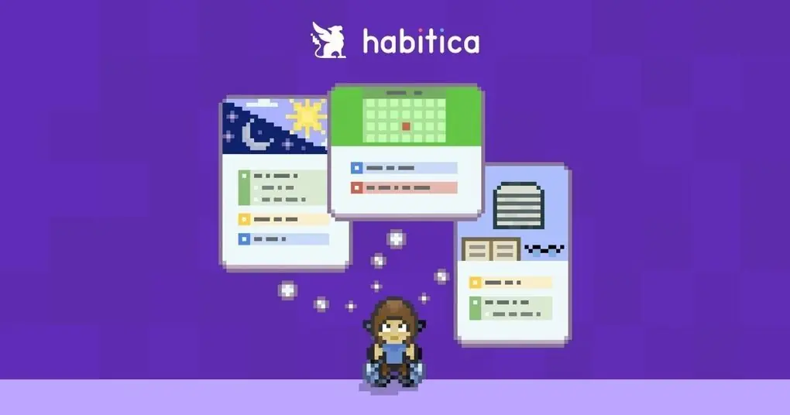
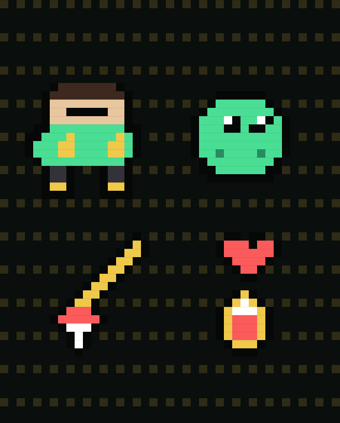
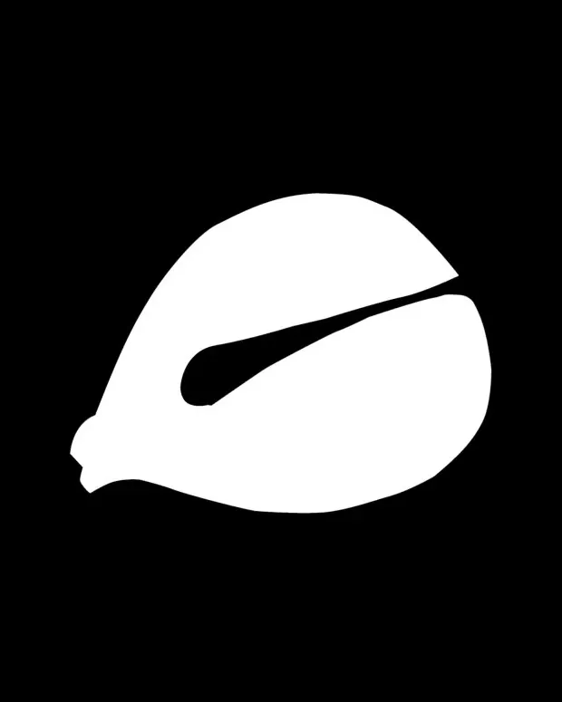
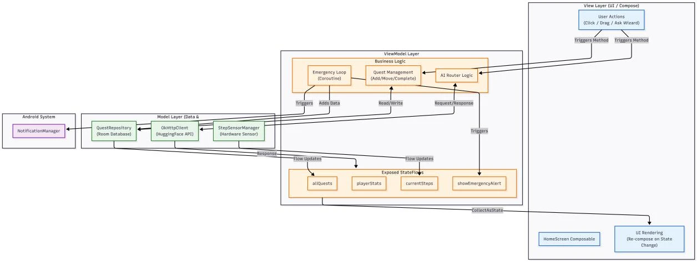

Gamifying the
Break From Routine
MiniQuest is a native Android application that turns two behavioral-intervention strategies, response interruption and environmental enrichment, into a pocket-sized RPG, using pervasive accelerometer sensing to reward the body for stepping outside its own habits.
The
Rigidity Problem
Rapp and Vollmer (2005) describe stereotyped behavior as repetitive action or sound that appears to serve no external purpose. It's a pattern most associated with autism, but not confined to it. Nwaordu and Charlton (2024) find that adults without ASD also fall into repetitive routines, just less frequently and less intensely.
The animal-behavior literature points at the trigger: Gross, Richter, Engel and Würbel (2012) tie cage-induced stereotypies to environments that are monotonous or under-stimulating, and Turner, Yang and Lewis (2002) show that enriched, variable environments measurably reduce them. Modern urban routine, in other words, is its own kind of cage.
A single-purpose habit tracker rewards you for staying inside the loop. MiniQuest is designed to reward you for stepping outside it.
The design premise behind MiniQuest's dual reward system


Fig. Home screen, rendered with vector pixel fonts and the custom HardShadowBox component to keep edges sharp on high-DPI displays.
Two evidence-based interventions (Boyd, McDonough & Bodfish, 2012)
When a stereotyped pattern would otherwise continue, the app interrupts it and redirects attention toward a new action. It's effective in the short term for low-level rigidity.
A menu of activity modules offering several relaxation and exploration choices, adding the sensory and interactive variety monotonous days are missing.
MiniQuest builds directly on this pair: the Emergency Loop coroutine handles interruption, and the Adventure Tools area handles enrichment.
Against Habitica
Habitica gamifies daily planning in an RPG shell. It's a genuinely motivating idea, and the closest existing comparison. But its reward loop stays locked to one thing: finishing your own pre-written tasks. Over time that narrow focus is exactly the kind of monotony the behavioral literature warns against, and engagement fades.
MiniQuest keeps the RPG reward structure but opens two channels Habitica doesn't have: Passive Sensing, where simply walking accrues energy in the background, and Induced Novelty, where the system itself, not the user's to-do list, decides when to surface an emergency task. The reward loop no longer depends entirely on the user already having planned their own escape from routine.
Design References
Three reference points shaped how MiniQuest looks, rewards, and interrupts.

Habitica: the RPG Reward Loop
Habitica proved a game shell could make routine self-management genuinely motivating. MiniQuest keeps that XP-and-gold loop but opens two new reward channels, Passive Sensing and Induced Novelty, so progress isn't gated entirely behind tasks the user already wrote down.

16-bit Pixel Aesthetic
Classic sprite-based RPGs read as playful, low-stakes and unmistakably game-like, the opposite tone of a clinical intervention app. The custom HardShadowBox component and vector pixel fonts exist purely to protect that crisp, hand-drawn edge against modern anti-aliasing.

The Electronic Wooden Fish
The wooden fish (muyu) is a centuries-old tool for repetitive, meditative tapping. MiniQuest's stress-relief module borrows that same one-tap ritual, paired with a haptic pulse instead of a physical knock, as Brewster and Brown's (2004) non-visual tactile channel for anxiety relief.
System
Architecture
MVVM with unidirectional data flow, built around a single AppViewModel as the app's single source of truth.
StateFlow to screen and forwards user intent upward. No business logic lives here.StateFlow<T>, orchestrates repository calls, sensor input and the AI API, and scopes every coroutine to viewModelScope so nothing outlives the screen.QuestRepository (Room persistence) · StepSensorManager (hardware abstraction) · OkClient (web service): each with a single responsibility, none aware of the UI.Reconstructed from Figure A1, the report's full system architecture diagram.

Fig. A1: the original diagram as submitted in the technical report appendix.
Why Room + Flow
All quest and player-stat data is written to a local Room database first, so gameplay stays instant and offline-first regardless of network state. Any change to repository.allQuests flows automatically into a StateFlow that Compose subscribes to, so a backend-inserted emergency task redraws the UI with no manual refresh. Room's compile-time SQL checking and strongly-typed Quest objects also remove an entire class of runtime crashes that a raw Cursor would allow.
Critical Implementation
Pervasive sensing from raw acceleration
Android's dedicated step-counter sensor is missing on many low-end or older devices. MiniQuest sidesteps that entirely by reading the raw tri-axis accelerometer directly, a sensor present on nearly every Android phone, and computing motion magnitude itself, so step detection is never limited by hardware tier.
The vector magnitude ?x² + y² + z²) is orientation-independent: however the phone is carried, any real motion changes the scalar, which is what drives the step-counting logic.
override fun onSensorChanged(event: SensorEvent?) {
event?.let {
val x = it.values[0]
val y = it.values[1]
val z = it.values[2]
val magnitude = sqrt(x * x + y * y + z * z)Noise filtering: a 300ms window stops a single shake being read as several steps in a row.
val currentTime = System.currentTimeMillis()
if (currentTime - lastShakeTime > 300) {
internalSteps++
saveStepsToStorage()
lastShakeTime = currentTime
}Multimodal & sensory regulation
Brewster and Brown (2004) treat tactile feedback as a non-visual information channel, useful precisely when visual load is already high. A single tap on the app's stress_relief module fires a haptic pulse, a small, immersive confirmation intended to take the edge off anxiety without asking for more visual attention.
On the visual side, standard anti-aliasing quietly blurs pixel-art edges on high-DPI screens. MiniQuest counters this with vector-based pixel fonts and a custom HardShadowBox component that forces hard edges past the renderer's automatic smoothing, keeping the game's pixel aesthetic genuinely sharp rather than approximated.
Async intelligence: the Grand Wizard
An in-app character, the Grand Wizard, is backed by a live call to the HuggingFace Inference API. Because that network call is inherently unpredictable, MiniQuest wraps it in Kotlin Coroutines rather than AsyncTask or a heavier RxJava dependency. It's scoped to viewModelScope so a suspended request is cancelled automatically the moment the user leaves the screen, avoiding both leaks and wasted battery.
fun askGrandWizard(userQuestion: String) {
viewModelScope.launch {
// Step 1: enter "thinking", lock the UI
_isWizardThinking.value = true
_wizardReply.value = "..."
// Step 2: try each router model on Dispatchers.IO
var finalResult: String? = null
for (modelId in routerModels) {
val (success, result) = tryRouterModel(modelId, userQuestion)
if (success && !result.isNullOrBlank()) {
finalResult = result; break
}
}
// Step 3: resolve, with an offline fallback line
_wizardReply.value = finalResult ?: offlineGrimoire.random()
// Step 4: unlock the UI
_isWizardThinking.value = false
}
}The isThinking flag is a minimal state machine that locks the UI mid-request so a user can't fire off duplicate calls out of "uncertainty anxiety" while waiting.
Permissions & stack
| Permission | Usage |
|---|---|
| Internet | OkHttp calls to the HuggingFace API powering the Wizard Q&A. |
| Network State | Checks Wi-Fi / mobile connectivity before an AI request. |
| Vibrate | Haptic feedback for the stress-relief module. |
| Post Notifications | System pop-ups for emergency quest alerts. |
| Body Sensor | Reserved for biometric data, in preparation for future expansion. |
Libraries
OkHttp handles all data transmission; Konfetti drives the gamified particle feedback that makes finishing a quest feel like an event rather than a checkbox.
Limitations &
Future Work
Current limitations
- Local-only storage: built entirely on device Room, with no cloud sync; uninstalling the app deletes all progress.
- Sensing ceiling: step counting relies solely on the phone's own accelerometer, can't draw on wearable data, and offers weak resistance to mechanical step-cheating.
Planned next
- Cloud sync: introduce Firebase in place of native Room for real-time account login and multi-device continuity.
- Sensing upgrade: integrate the Health Connect API for wearable data, with ML Kit analyzing waveform features to filter out mechanical cheating.
Closing
Reflection
MiniQuest isn't just a task-management app wearing an RPG skin. It's a small, working test of whether phone sensors can be pointed at a real behavioral-health problem instead of a to-do list.
By pairing a self-built perception layer, raw-acceleration step counting that's immune to hardware gaps, with an offline-first MVVM data foundation and lifecycle-safe coroutine concurrency for its AI character, the project tries to hold two things at once: sound mobile engineering, and a genuinely immersive, pixel-perfect feel. The balance between those two is the actual deliverable.